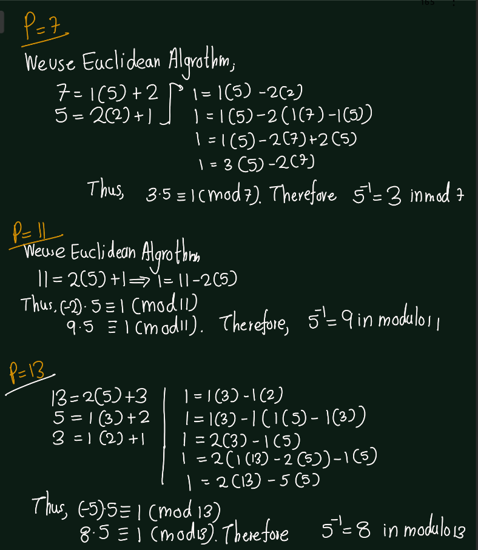
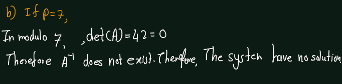
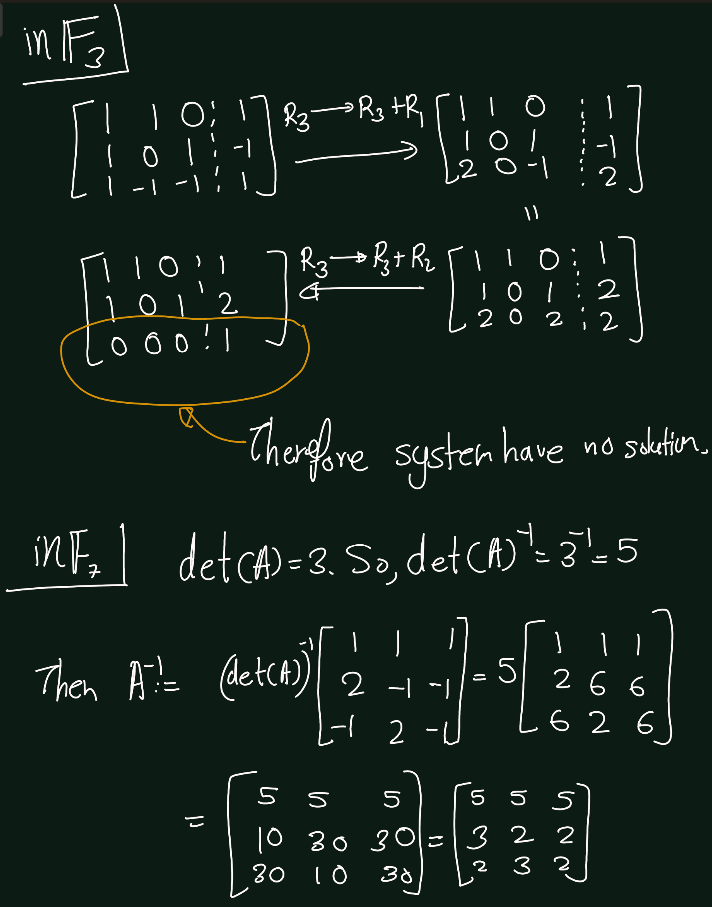
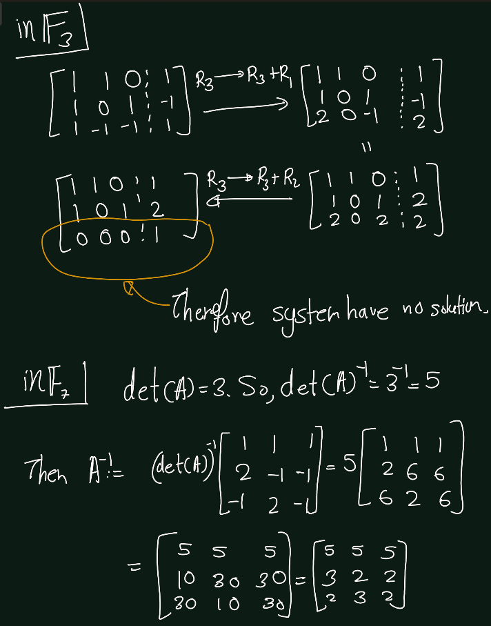

Chapter 5 Tempoarray files for exercises
5.1 Chapter 3
5.1.1 Fields
Exercise 5.1 (Artin 3.1.1) Prove that the numbers of the form \(a + b\sqrt(2)\),where a and b are rational numbers, form a subfield of \(\mathbb{C}\)


Exercise 5.2 (Artin 3.1.2) Find the inverse of \(5\) modulo \(p\), for \(p= 7, 11, 13,\) and \(17\).

Exercise 5.3 (Artin 3.1.3) Compute the product polynomial \((x^3 + 3x^2 + 3x + 1)(x^4 + 4x^3 + 6x^2 + 4x + 1)\) when the coefficients are regarded as elements of the field \(\mathbb{F}_7\). Explain your answer.
Exercise 5.4 (Artin 3.1.4) Consider the system of linear equations \[\begin{bmatrix}6 & -3\\ 2 & 6\end{bmatrix} \begin{bmatrix}x_1\\ x_2\end{bmatrix} =\begin{bmatrix}3\\ 1\end{bmatrix}\]
- Solve the system in \(\mathbb{F}_p\) when \(p = 5, 11,\) and \(17\).
- Determine the number of solutions when \(p = 7\).

Exercise 5.5 (Artin 3.1.5) Determine the primes \(p\) such that the \[A =\begin{bmatrix} 1 & 2 & 0 \\ 0 & 3 & -1 \\ -2 & 0 & 2 \end{bmatrix}\] is invertible, when its entries are considered to be in \(\mathbb{F}_p\).

Exercise 5.6 (Artin 3.1.5) Solve completely the systems of linear equations \(AX = 0\) and \(AX = B\), where \[ A = \begin{bmatrix} 1 & 1 & 0 \\ 1 & 0 & 1 \\ 1 & -1 & -1 \end{bmatrix} \quad \text{and} \quad B = \begin{bmatrix} 1 \\ -1 \\ 1 \end{bmatrix} \]
- in \(\mathbb{Q}\),
- in \(\mathbb{F}_2\),
- in \(\mathbb{F}_3\),
- in \(\mathbb{F}_7\)


 

Exercise 5.7 (Artin 3.1.7) By finding primitive elements, verify that the multiplicative group \(\mathbb{F}_P^\times\);is cyclic for all primes \(p < 20\).

Exercise 5.8 (Artin 3.1.8) Let \(p\) be a prime integer. (a) Prove Fermat’s Theorem: For every integer \(a\), \(a^p \equiv a modulo p\). (b) Prove Wilson’s Theorem: \((p -1)!\equiv -1(modulo p)\).

Exercise 5.9 (Artin 3.1.9) Determine the orders of the matrices \(\begin{bmatrix} 1 & 1 \\ 0 & 1 \end{bmatrix}\) and \(\begin{bmatrix} 2 & 0 \\ 0 & 1 \end{bmatrix}\) in the group \(GL_2(\mathbb{F}_7)\).

Exercise 5.10 (Artin 3.1.10) Interpreting matrix entries in the field \(\mathbb{F}_2\), prove that the four matrices \[\begin{align*} \begin{bmatrix} 0 & 0 \\ 0 & 0 \end{bmatrix}, \begin{bmatrix} 1 & 0 \\ 0 & 1 \end{bmatrix}, \begin{bmatrix} 1 & 1 \\ 1 & 0 \end{bmatrix}, \begin{bmatrix} 0 & 1 \\ 1 & 1 \end{bmatrix} \end{align*}\] form a field.
Hint: You can cut the work down by using the fact that various laws are known to hold for addition and multiplication of matrices.
First Observe followings
- Addition:
| \(+\) | \(\begin{bmatrix} 0 & 0 \\ 0 & 0 \end{bmatrix}\) | \(\begin{bmatrix} 1 & 0 \\ 0 & 1 \end{bmatrix}\) | \(\begin{bmatrix} 1 & 1 \\ 1 & 0 \end{bmatrix}\) | \(\begin{bmatrix} 0 & 1 \\ 1 & 1 \end{bmatrix}\) |
|---|---|---|---|---|
| \(\begin{bmatrix} 0 & 0 \\ 0 & 0 \end{bmatrix}\) | \(\begin{bmatrix} 0 & 0 \\ 0 & 0 \end{bmatrix}\) | \(\begin{bmatrix} 1 & 0 \\ 0 & 1 \end{bmatrix}\) | \(\begin{bmatrix} 1 & 1 \\ 1 & 0 \end{bmatrix}\) | \(\begin{bmatrix} 0 & 1 \\ 1 & 1 \end{bmatrix}\) |
| \(\begin{bmatrix} 1 & 0 \\ 0 & 1 \end{bmatrix}\) | \(\begin{bmatrix} 1 & 0 \\ 0 & 1 \end{bmatrix}\) | \(\begin{bmatrix} 0 & 0 \\ 0 & 0 \end{bmatrix}\) | \(\begin{bmatrix} 0 & 1 \\ 1 & 1 \end{bmatrix}\) | \(\begin{bmatrix} 1 & 1 \\ 1 & 0 \end{bmatrix}\) |
| \(\begin{bmatrix} 1 & 1 \\ 1 & 0 \end{bmatrix}\) | \(\begin{bmatrix} 1 & 1 \\ 1 & 0 \end{bmatrix}\) | \(\begin{bmatrix} 0 & 1 \\ 1 & 1 \end{bmatrix}\) | \(\begin{bmatrix} 0 & 0 \\ 0 & 0 \end{bmatrix}\) | \(\begin{bmatrix} 1 & 0 \\ 0 & 1 \end{bmatrix}\) |
| \(\begin{bmatrix} 0 & 1 \\ 1 & 1 \end{bmatrix}\) | \(\begin{bmatrix} 0 & 1 \\ 1 & 1 \end{bmatrix}\) | \(\begin{bmatrix} 1 & 1 \\ 1 & 0 \end{bmatrix}\) | \(\begin{bmatrix} 1 & 0 \\ 0 & 1 \end{bmatrix}\) | \(\begin{bmatrix} 0 & 0 \\ 0 & 0 \end{bmatrix}\) |
- Closure ?: By above table we can verify Closure.
- Identity ?: Identity element is \(\begin{bmatrix} 0 & 0 \\ 0 & 0 \end{bmatrix}\).
- Inverse ? : Inverse of each elements is itself.(We can verify it from the above table.)
- Associativity ?: Associativity property we can get from the matrix addition.
- Commutative ?: We can verify communicativeness of addition from the above table.
Thus, it makes abelian group under \(+\).
- Multiplication:
| \(*\) | \(\begin{bmatrix} 1 & 0 \\ 0 & 1 \end{bmatrix}\) | \(\begin{bmatrix} 1 & 1 \\ 1 & 0 \end{bmatrix}\) | \(\begin{bmatrix} 0 & 1 \\ 1 & 1 \end{bmatrix}\) | |
|---|---|---|---|---|
| \(\begin{bmatrix} 1 & 0 \\ 0 & 1 \end{bmatrix}\) | \(\begin{bmatrix} 1 & 0 \\ 0 & 1 \end{bmatrix}\) | \(\begin{bmatrix} 1 & 1 \\ 1 & 0 \end{bmatrix}\) | \(\begin{bmatrix} 0 & 1 \\ 1 & 1 \end{bmatrix}\) | |
| \(\begin{bmatrix} 1 & 0 \\ 0 & 1 \end{bmatrix}\) | \(\begin{bmatrix} 1 & 0 \\ 0 & 1 \end{bmatrix}\) | \(\begin{bmatrix} 1 & 0 \\ 0 & 1 \end{bmatrix}\) | \(\begin{bmatrix} 1 & 0 \\ 0 & 1 \end{bmatrix}\) | |
| \(\begin{bmatrix} 0 & 1 \\ 1 & 1 \end{bmatrix}\) | \(\begin{bmatrix} 0 & 1 \\ 1 & 1 \end{bmatrix}\) | \(\begin{bmatrix} 1 & 1 \\ 1 & 0 \end{bmatrix}\) | \(\begin{bmatrix} 0 & 1 \\ 1 & 1 \end{bmatrix}\) |
- Closure ?: By above table we can verify Closure.
- Identity ?: Identity element is \(\begin{bmatrix} 0 & 1 \\ 1 & 0 \end{bmatrix}\).
- Inverse ? : Inverse of each elements is itself.(We can verify it from the above table.)
- Associativity ?: Associativity property we can get from the matrix multiplication
- Commutative ?: We can verify communicativeness of addition from the above table.
Thus, the set of non-zero elements of given set is an abelian group.
Distributive property: Multiplications is distributive over addition.
Thus, The given set forms a field.
Exercise 5.11 (Artin 3.1.9) Prove that the set of symbols \(\{a + bi \mid a, b \in \mathbb{F}_3\}\) forms a field with nine elements, if the laws of composition are made to mimic addition and multiplication of complex numbers. Will the same method work for \(\mathbb{F}_5\)? For \(\mathbb{F}_7\)? Explain.


5.1.2 VectorSpaces
Exercise 5.12 (Artin 3.2.1)
- Prove that the scalar product of a vector with the zero element of the field \(F\) is the zero vector.
- Prove that if \(w\) is an element of a subspace \(W\), then \(-w\) is in \(W\) too.


Exercise 5.13 (Artin 3.2.2) Which of the following subsets is a sub space of the vector space \(F^{n\times n}\) of \(n\times n\) matrices with coefficients in \(F\)?
- symmetric matrices(\(A = A^T)\),
- invertible matrices,
- upper triangular matrices.


Exercise 5.14 (Artin 3.3.1) Find a basis for the space of \(n \times n\) symmetric matrices \((A^T = A)\).

Exercise 5.15 (Artin 3.3.2) Let \(W \subset \mathbb{R}^4\) be the space of solutions of the system of linear equations \(AX = 0\), where \(A =\begin{bmatrix} 2 & 1 & 2 & 3 \\ 1 & 1 & 3 & 0 \end{bmatrix}\). Find a basis for \(W\).

Exercise 5.16 (Artin 3.3.3) Prove that the three functions \(x^2, \cos(x)\), and \(e^x\) are linearly independent.
Proof. Suppose that \[\alpha x^2+ \beta \cos(x) +\gamma e^x =0\quad \text{for all } x\in \mathbb{R}\] where \(\alpha,\beta,\gamma\) scalers.
- The original equation, when substitute \(x=0\) gives us \(b \cdot \cos(0) + c \cdot e^0 = 0\), which simplifies to \(b + c = 0\).
- Differentiating once gives \(2a \cdot x - b \cdot \sin(x) + c \cdot e^x = 0\). Substituting \(x = 0\) gives \(-b + c = 0\).
- Differentiating twice gives \(2a - b \cdot \cos(x) + c \cdot e^x = 0\). Substituting \(x = 0\) gives \(2a + b + c = 0\).
These equations show that the only solution is \(a = b = c = 0\). Therefore, the functions \(x^2\), \(\cos(x)\), and \(e^x\) are linearly independent.
Exercise 5.17 (Artin 3.3.4) Let \(A\) be an \(m \times n\) matrix, and let \(A'\) be the result of a sequence of elementary row operations on \(A\). Prove that the rows of \(A\) span the same space as the rows of \(A'\).